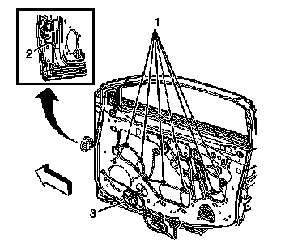

Front Side Door Replacement
Front Side Door Replacement
Removal Procedure
1. Remove the door trim panel. Refer to Front Side Door Trim Panel Replacement (Service and Repair) .
2. Remove the inside door handle. Refer to Front Side Door Inside Handle Replacement (Service and Repair) .
3. Remove the water deflector. Refer to Front Side Door Water Deflector Replacement (Service and Repair) .
4. Remove the window inner belt sealing strip. Refer to Front Side Door Window Belt Inner Sealing Strip Replacement (Front Side Door Window Belt Inner Sealing Strip Replacement) .
5. Remove the inner window seal. Refer to Front Side Door Window Inner Weatherstrip Replacement (Front Side Door Window Inner Weatherstrip Replacement) .
6. Remove the outside rear view mirror. Refer to Power Mirror Replacement (Power Mirror Replacement) .
7. Remove the window outer belt sealing strip. Refer to Front Side Door Window Belt Outer Sealing Strip Replacement (Front Side Door Window Belt Outer Sealing Strip Replacement) .
8. Remove the window. Refer to Front Side Door Window Replacement (Service and Repair) .
9. Remove the front door upper auxiliary weatherstrip. Refer to Front Side Door Upper Auxiliary Weatherstrip Replacement (Service and Repair) .
10. Remove the door frame applique. Refer to Front Door Frame Applique Replacement () .
11. Remove the window regulator. Refer to Front Side Door Window Regulator Replacement (Service and Repair) .
12. Remove the outside door handle. Refer to Front Side Door Outside Handle Replacement (Service and Repair) .
13. Remove the door latch. Refer to Front Side Door Latch Replacement (Service and Repair) .
14. Remove the door bottom auxiliary weatherstrip. Refer to Front Side Door Bottom Auxiliary Sealing Strip Replacement (Service and Repair) .

15. Disconnect the door wire harness from the body wire harness at the hinge pillar.
16. Remove the wiring harness retainers (1) from the inner door panel.
17. Remove the rubber conduit and the wiring harness from the door.
18. Remove all the plastic nuts and retainers from the door shell.
19. Remove the door check link. Refer to Front Side Door Check Link Replacement (Service and Repair) .
20. Support the door.
21. With an assistant, remove the door hinge to door bolts in order to remove the door.
Installation Procedure
1. With an assistant, install the door to the vehicle.
2. Support the door.
Notice: Refer to Fastener Notice (Fastener Notice) .
3. Install the hinge to door bolts.
Tighten the hinge to door bolts to 25 N.m (18 lb ft).
4. Install the door check link. Refer to Front Side Door Check Link Replacement (Service and Repair) .
5. Install all the plastic nuts and the retainers into the door shell that were removed during disassembly.
6. Route the wiring harness and the conduit into the door.
7. Install the door wiring harness retainers (1) to the inner door panel.
8. Connect the door wiring harness electrical connector to the body wiring harness electrical connector.
9. Install the wire harness connectors into the hinge pillar.
10. Install the door bottom auxiliary weatherstrip. Refer to Front Side Door Bottom Auxiliary Sealing Strip Replacement (Service and Repair) .
11. Install the door latch. Refer to Front Side Door Latch Replacement (Service and Repair) .
12. Install the outside door handle. Refer to Front Side Door Outside Handle Replacement (Service and Repair) .
13. Install the window regulator. Refer to Front Side Door Window Regulator Replacement (Service and Repair) .
14. Install the door frame applique. Refer to Front Door Frame Applique Replacement () .
15. Install the window. Refer to Front Side Door Window Replacement (Service and Repair) .
16. Install the window outer belt seal strip. Refer to Front Side Door Window Belt Outer Sealing Strip Replacement (Front Side Door Window Belt Outer Sealing Strip Replacement) .
17. Install the outside rearview mirror. Refer to Power Mirror Replacement (Power Mirror Replacement) .
18. Install the window inner belt seal strip. Refer to Front Side Door Window Belt Inner Sealing Strip Replacement (Front Side Door Window Belt Inner Sealing Strip Replacement) .
19. Install the front door upper auxiliary weatherstrip. Refer to Front Side Door Upper Auxiliary Weatherstrip Replacement (Service and Repair) .
20. Install the water deflector. Refer to Front Side Door Water Deflector Replacement (Service and Repair) .
21. Install the inside door handle. Refer to Front Side Door Inside Handle Replacement (Service and Repair) .
22. Install the door trim panel. Refer to Front Side Door Trim Panel Replacement (Service and Repair) .
23. Inspect for proper door adjustment. Refer to Door Adjustment (Adjustments) .
24. Touch up any paint damage to the front door hinge, fasteners, and check link with body color paint.